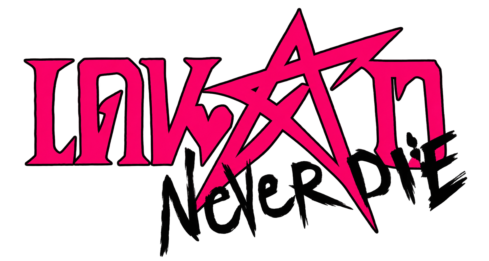
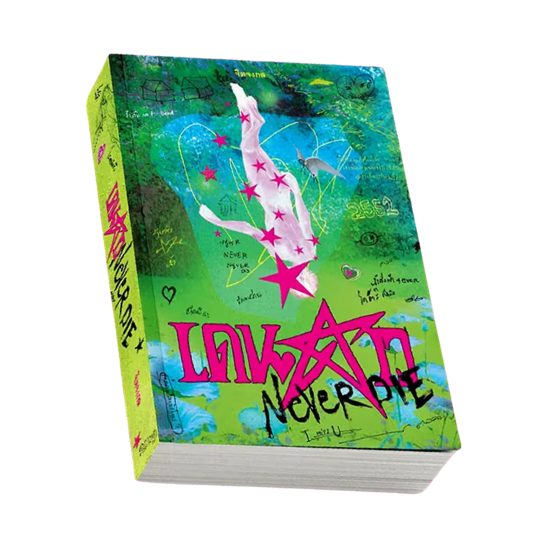
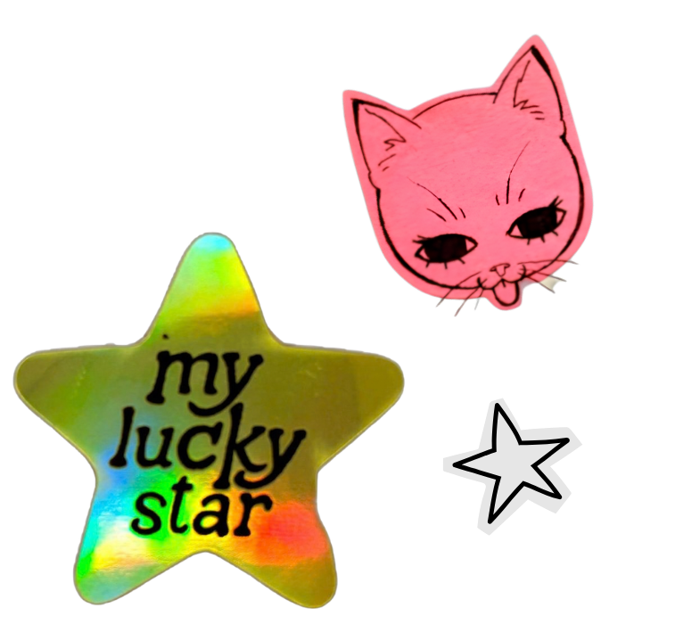
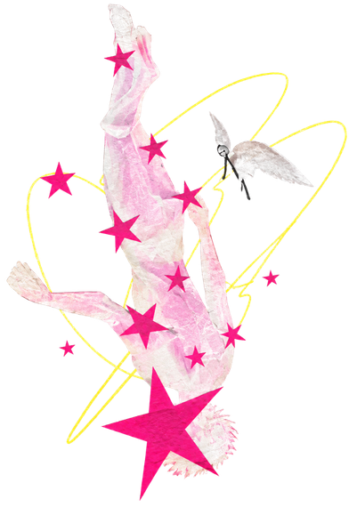
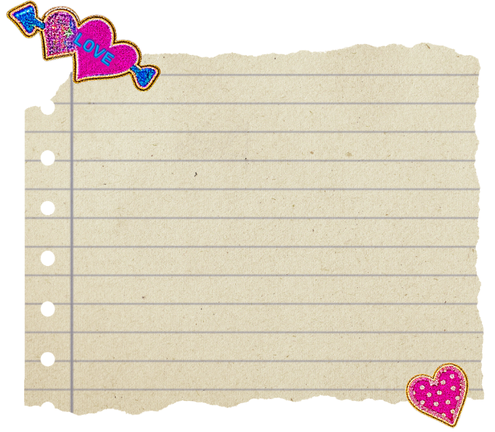

เดนดาว NEVERDIE: ถ้าความรักทำให้เรารู้สึกว่า
“ยังมีชีวิตอยู่”
คุณจะกล้าเปิดอ่านไหม?
จิตจงกล

เรื่องย่อ
‘น้ำ’ โฮโมเซเปียนส์หนึ่งเดียวในรัศมีร้อยเมตรจากวิวอิมเพรสชั่นนิสม์ท้ายไร่เวิ้งว้าง ผู้พกเอาความเหงาขนาดเท่าจักรวาลไว้ในหัวใจขนาดเท่ากำปั้นเป็นยันต์กันเหงา ริมบึงบัวโมเนต์มีบ้านสองหลัง — สีเขียวมีไว้อาศัย สีชมพูมีไว้หลบซ่อน มันใหญ่พอจะซ่อนทุกสิ่งให้พ้นจากสายตา ยัดเข้าไปได้ทุกอย่างตั้งแต่ลังแป้งปาท่องโก๋เหลือใช้ นาฬิกาตาย รถเครื่องเกินจำนวนคนอาศัยเรื่อยไปถึงสองมือของศิลปินภาพเขียน ความฝันที่จะเติบโตนอกบ้านโป่ง ความลับที่ว่าน้ำชอบผู้ชาย และความรักไม่มีวันตาย — never die ที่แปลว่านิรันดร์
READ NOWทำไมถึงควรอ่าน “เดนดาว NEVERDIE”
ถ้าคุณกำลังมองหาหนังสือที่ไม่ได้เล่าเพียงเรื่อง “ความรัก” แต่ชวนตั้งคำถามกับ ชีวิต ตัวตน ความฝัน ความเหงา และการเป็นที่ยอมรับ เดนดาว NEVERDIE เป็นหนังสือที่น่าสนใจอย่างมาก จุดเด่นของเรื่องคือการสร้างโลกที่มีบรรยากาศเฉพาะตัว ตั้งแต่ บึงบัว บ้านสีเขียว บ้านสีชมพู ชีวิตในบ้านโป่ง ไปจนถึงความฝันในการเติบโตและการเป็นศิลปิน ทำให้สถานที่ไม่ได้เป็นเพียงฉากประกอบ แต่กลายเป็นส่วนหนึ่งของความทรงจำและความรู้สึกของตัวละคร
นอกจากนี้ เรื่องยังนำเสนอความสัมพันธ์ของคนสองคนที่ต่างมี “ความไม่สมบูรณ์” ในชีวิต และค่อย ๆ ทำให้ผู้อ่านเห็นว่า ความรักอาจเป็นทั้งพื้นที่ปลอดภัย และพื้นที่ที่ทำให้เราได้เผชิญหน้ากับตัวเอง
หนังสือเล่มนี้จึงน่าสนใจในฐานะงานอ่านที่สามารถต่อยอดไปสู่การพูดคุยเรื่อง อัตลักษณ์ ความแตกต่างทางสังคม ความสัมพันธ์ในครอบครัว ชนชั้น ความฝันของคนรุ่นใหม่ และการค้นหาตัวตน ได้ ไม่ใช่แค่อ่านเพื่อรู้ว่า “สองคนนี้จะรักกันไหม” แล้วจบกันไปเหมือนการบ้านที่มนุษย์ตั้งใจทำตอนตีสอง
พี่ทำให้ผมรู้สึกว่าผมเอง
ก็มีชีวิตเหมือนกัน”


ร้าวรานพอกันกับความรัก”

เงียบจนไม่รู้ว่าตัวว่า
แม่งเหงาชิบหาย
เงียบอย่างคาดไม่ได้ว่า
การแผ่ซานของความเหงา
กับการขยายตัวของเอกภาพ
อะไรมันไพศาลกว่ากัน”